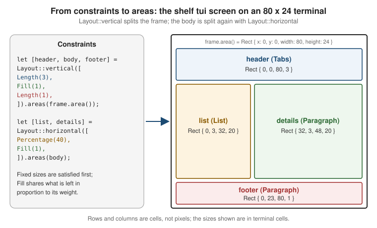

Ratatui: Layout, Widgets & Styling
|
This content was generated with the assistance of AI and should be verified against the official documentation before being relied on in production. |
Ratatui draws by immediate-mode rendering: on every pass of the event loop the application describes the whole screen,
and the library writes that description into a cell buffer which it then diffs against the previous frame. Describing
the screen has three ingredients, and this page covers all three: where things go (Rect, Layout, Constraint),
what the text looks like (Span, Line, Text, Style) and which widget draws each area (Block, List,
Table and the rest). Installing Ratatui, the crate split, ratatui::run, DefaultTerminal and the first
counter-style application are on Ratatui: Getting Started; events, async,
application architecture and backends are on
Ratatui: Events, Async & Application Architecture; testing
a screen with TestBackend and the third-party widget ecosystem are on
Ratatui: Testing & Ecosystem. The render pipeline that all TUI
libraries share is on TUI Architecture & Concepts.
The page was written against Ratatui 0.30.2 and ratatui-widgets 0.3.2, as listed on docs.rs on 2026-10-25.
Ratatui has not reached 1.0, so each 0.x release may change an API; compare with the official breaking-changes pages
before upgrading. The running example is the shelf tui catalogue browser of the Bookshelf scenario: a tab bar, a
list of books, a details pane, a loans table, a status line and a help popup. The Rust examples were not compiled
while this page was written because no Rust toolchain was available on the machine used; every type, method and
argument name in them was checked against the crates' documentation on docs.rs instead. Compile each snippet before
relying on it.
The 0.30 crate layout in one paragraph
Since 0.30 the library is split into several crates, and the ratatui crate re-exports what applications need.
ratatui-core holds the traits and types every widget library needs (Rect, Layout, Style, Buffer, Text, the
Widget and StatefulWidget traits); ratatui-widgets holds the built-in widgets described below. An application
imports everything from ratatui::layout, ratatui::style, ratatui::text and ratatui::widgets, so the split only
matters if you write a widget library (depend on ratatui-core, which changes less often) or an no_std-style
consumer. Crossterm is re-exported as ratatui::crossterm. Cargo features that matter on this page are listed in the
table below.
| Cargo feature | Default | Effect |
|---|---|---|
|
yes |
Enables the |
|
yes |
Caches the result of |
|
yes |
Enables |
|
yes |
Re-exports the |
|
no |
Enables the |
|
no |
Enables |
|
no |
Colour conversions with the |
Source: ratatui — feature flags
Rect: the unit of layout
Every widget is rendered into a Rect, a rectangle of terminal cells (not pixels) with the public u16 fields x,
y, width and height. The origin (0, 0) is the top-left cell, x grows to the right and y grows downwards.
Frame::area() returns the Rect of the whole terminal for the current frame; it is the same for the whole render
pass, and it replaces the deprecated Frame::size().
| Method | What it does |
|---|---|
|
Const constructor; |
|
Number of cells ( |
|
The edges of the rectangle |
|
Shrink or grow by a margin; the standard way to put a widget inside a border drawn separately |
|
Move or resize a copy |
|
Combine rectangles; |
|
Centre a sub-rectangle sized by constraints; the usual way to place a popup |
|
Hit testing, for example for mouse clicks |
|
Iterators over the rows, columns or every cell position |
|
Split the rectangle with a |
All geometry types are u16, so positions computed by hand with plain arithmetic on the fields (x + width) can
overflow in debug builds. Prefer clamp, intersection, contains and inner to hand-written arithmetic.
Source: docs.rs — ratatui::layout::Rect
Layout, Constraint and Flex
Layout splits a Rect into several child Rect values along one direction. A layout is built from a direction and
a list of Constraint values, and applied to an area.
| Function | Meaning |
|---|---|
|
Stack the segments top to bottom ( |
|
Place the segments left to right ( |
|
Same as the two above with an explicit |
|
Returns a fixed-size array of |
|
Returns an |
|
Also return the spacer rectangles between and around the segments |
|
Shrink the area before splitting |
|
How leftover space is distributed (see below) |
|
Gap between segments; a positive number is a gap, a negative number makes the segments overlap |
Constraints
Each segment is sized by one Constraint. When the constraints cannot all be satisfied (an 80-column terminal asked
for 100 columns of fixed content), the solver follows a fixed priority.
| Constraint | Meaning | Priority (highest first) |
|---|---|---|
|
At least this many cells |
1 |
|
At most this many cells |
2 |
|
Exactly this many cells |
3 |
|
A percentage of the whole area being divided; the result is rounded to whole cells |
4 |
|
A fraction of the whole area, rounded |
5 |
|
Shares the excess space with other |
6 |
Percentage and Ratio are computed against the whole space being divided, not the space left after the fixed
segments, so [Length(10), Percentage(50)] of 100 columns gives 10 and 50, not 10 and 45. A third cannot be written
as a percentage, so use Ratio(1, 3) or Fill(1) for it. Constraint::default() is Percentage(100), and a plain
u16 converts into Length. Helpers from_lengths, from_percentages, from_ratios, from_mins, from_maxes and
from_fills build a Vec of one kind of constraint from numbers. The Fill constraint is the one to prefer for the
flexible region of a screen, because it expresses "the rest" explicitly and composes with other Fill weights
([Fill(1), Fill(2)] gives a one-third / two-thirds split).
Flex
Flex decides where the excess space goes when the constraints leave some over.
| Variant | Behaviour |
|---|---|
|
Stretches to fill the area; the excess goes to the last segment of the lowest priority (the behaviour before |
|
Pack the segments at the start, at the end or in the middle of the area |
|
Excess space between neighbouring segments, none at the edges |
|
Equal excess space in every gap, including before the first and after the last segment |
|
Each segment gets an equal share of the excess on both sides |
The shelf screen
use ratatui::{
layout::{Constraint, Flex, Layout, Margin, Rect},
Frame,
};
fn split_screen(frame: &mut Frame) -> (Rect, Rect, Rect, Rect, Rect) {
// Header of 3 rows, footer of 1 row, everything else for the body.
let [header, body, footer] = Layout::vertical([
Constraint::Length(3),
Constraint::Fill(1),
Constraint::Length(1),
])
.areas(frame.area());
// Body: 40 % list, the rest for the details pane, with a one-cell gap.
let [list, details] = Layout::horizontal([Constraint::Percentage(40), Constraint::Fill(1)])
.spacing(1)
.areas(body);
(header, list, details, footer, body.inner(Margin { vertical: 1, horizontal: 1 }))
}
fn button_row(area: Rect) -> [Rect; 2] {
// Two fixed-width buttons centred in the row.
Layout::horizontal([Constraint::Length(12), Constraint::Length(12)])
.flex(Flex::Center)
.spacing(2)
.areas(area)
}
On an 80 x 24 terminal the vertical layout yields Rect { x: 0, y: 0, width: 80, height: 3 }, a 20-row body and a
one-row footer; the horizontal split then gives the list roughly 40 percent of the width and the details pane the rest,
minus the one-cell gap. The rectangles in the figure are rounded for readability, so tests should assert on rendered
content rather than on exact widths computed by hand. Margin is written as a struct literal with vertical and
horizontal fields, the form the official pages use.
Layout pitfalls
-
areas::<N>panics when the array length and the number of constraints differ. A length known only at run time needssplitortry_areas. -
A layout is recomputed every frame. With the default
layout-cachefeature the results of repeated identical splits are cached;Layout::init_cachesets the cache size before first use. Layouts are cheap, so build them in the draw function rather than storing them. -
Areas may be empty when the terminal is small (
Rect::is_empty). Code that indexes into a rectangle must check first. Test the application at a very small size. -
When a widget does not appear, log its
Rectfirst: a wrong or empty rectangle is the usual cause. -
Percentages are rounded, so three
Percentage(33)segments do not add up to the whole area. UseFillorRatio.
Text and styling primitives
Span, Line and Text
Ratatui models styled text in three layers, and every widget that shows text accepts anything convertible to them, so
a plain &str or String works until styling is needed.
| Type | Holds | Notes |
|---|---|---|
|
A run of characters sharing one |
|
|
One line made of |
|
|
Several |
|
Masked wraps a string so that it is displayed as a mask character (for a password field); StyledGrapheme is the
rendering-level unit and is not part of the Span / Line / Text hierarchy; the ToSpan, ToLine and ToText traits
convert values to each layer. Alignment set on a Line overrides the alignment of the Text or Paragraph that
contains it. A Span never wraps and never contains a newline: embedding \n in a span is a bug, build a Text.
use ratatui::{
style::{Style, Stylize},
text::{Line, Span, Text},
};
fn book_details<'a>(title: &'a str, author: &'a str, copies: u32) -> Text<'a> {
let mut text = Text::default();
text.push_line(Line::from(vec![
Span::raw("Title: "),
Span::styled(title, Style::new().bold()),
]));
text.push_line(Line::from(vec!["Author: ".into(), author.cyan()]));
text.push_line(Line::from(format!("Copies: {copies}")).dark_gray());
text
}Source: docs.rs — ratatui::text
Style, Stylize, Color and Modifier
A Style is a set of optional changes: a foreground colour, a background colour, an underline colour and the added
and removed Modifier flags. Styles are incremental: when several styles are applied to the same cell (the block,
then the list, then the item, then the highlight), the cell ends up with the merge of all of them, with later styles
winning on the properties they set. Style::default() changes nothing; Style::reset() resets every property at that
point of the sequence.
use ratatui::style::{Color, Modifier, Style, Stylize};
let explicit = Style::new()
.fg(Color::Black)
.bg(Color::Green)
.add_modifier(Modifier::BOLD | Modifier::ITALIC);
// Stylize shorthands build the same thing from a &str, Span, Line, widget or Style.
let shorthand = Style::new().black().on_green().bold().italic();
let label = "overdue".red().on_black().bold();
let warning = Style::new().yellow().remove_modifier(Modifier::DIM);Source: docs.rs — ratatui::style
Stylize is implemented for every type that implements Styled: &str, String, Span, Line, Style and most
widgets, so Paragraph::new("x").red() and Block::bordered().blue() work. Its shorthands are named after the
colour (red(), dark_gray(), light_blue()), prefixed with on_ for backgrounds, and come in pairs for the
modifiers (bold() and not_bold(), dim, italic, underlined, slow_blink, rapid_blink, reversed,
hidden, crossed_out).
Color variant |
Meaning |
|---|---|
|
The terminal’s default foreground or background |
|
The seven standard ANSI colours (codes 30-36 and 40-46) |
|
ANSI "white" (code 37); not a bright colour despite the name |
|
The bright variants (codes 90-96 and 100-106) |
|
ANSI bright white (code 97) |
|
An entry of the 256-colour palette |
|
24-bit true colour |
Color also parses from strings ("light red", "#FF0000", "10" for an indexed colour), which is how colours read
from a configuration file are turned into styles. The nine Modifier flags (BOLD, DIM, ITALIC, UNDERLINED,
SLOW_BLINK, RAPID_BLINK, REVERSED, HIDDEN, CROSSED_OUT) are bit flags that combine with |.
Styling pitfalls and platform differences
-
Rgbis displayed correctly only on terminals with 24-bit colour. Per the official page the termwiz backend falls back to the default text colour when true colour is unsupported, while the crossterm and termion backends have no such fallback and the result may be unpredictable. Prefer the named colours andIndexedfor portable output, and see Escape Sequences & Terminal Capabilities for how to detect colour support and for theNO_COLORconvention. The official documentation describes no automatic handling ofNO_COLOR, so a TUI that must honour it has to implement that itself. -
Style::underline_colorneeds theunderline-colorfeature (on by default) and a non-standard escape sequence that only the crossterm backend implements. -
Modifier::SLOW_BLINK,RAPID_BLINK,HIDDENandCROSSED_OUTare accepted by every backend but displayed by only some terminals; do not rely on them to carry meaning.REVERSEDis the most portable way to mark a selection and works on a terminal with no colour at all. -
The names
GrayandWhitefollow the ANSI palette (standard and bright white), not the usual meaning of "gray"; the actual shades are chosen by the terminal theme. The sameColor::Blueis a different blue in a Windows Terminal scheme, in macOS Terminal and in a Linux terminal, which is why contrast must be tested in more than one theme.
The Widget traits and Frame
A Widget is any type that can draw itself into a Buffer inside a Rect:
pub trait Widget {
fn render(self, area: Rect, buf: &mut Buffer)
where
Self: Sized;
}render takes self by value, but since Ratatui 0.26 the built-in widgets also implement Widget for a reference to
themselves (&List, &Table and so on), so a widget built once can be stored and rendered on every frame. Strings
(&str, String), Span, Line, Text and Option<W> implement Widget as well, which is why
frame.render_widget("Hello", area) works. StatefulWidget adds a State associated type and a &mut state
argument for widgets whose appearance depends on something that persists between frames (selection, scroll offset).
Frame method |
Purpose |
|---|---|
|
The |
|
Draw a |
|
Draw a |
|
Show the cursor after the frame renders (hidden if never called; used by text input) |
|
Direct access to the frame’s |
|
The frame sequence number, wrapping to zero after |
The WidgetRef and StatefulWidgetRef traits (and FrameExt::render_widget_ref) render a widget through &self so
that Box<dyn WidgetRef> trees are possible, but they are behind the unstable-widget-ref feature, come with no
stability guarantees and may change or be removed in any release. The official pages state this explicitly. Applications
that need heterogeneous widgets today normally use an enum of widget kinds or a closure per area instead.
Every built-in widget
ratatui-widgets 0.3.2 ships these widgets (the ratatui::widgets module re-exports all of them; the calendar and
canvas widgets live in submodules).
| Widget | Shows | State | Main options |
|---|---|---|---|
|
Borders, titles and padding around other widgets |
none |
|
|
Styled, optionally wrapped and scrolled text |
none |
|
|
Selectable list of items |
|
|
|
Rows and columns with header and footer |
|
|
|
A horizontal tab bar |
none ( |
|
|
A block progress bar with a centred label |
none |
|
|
A one-line progress bar |
none |
|
|
Compact data as a row of bars |
none |
|
|
Values as vertical or horizontal bars, optionally grouped |
none |
|
|
Datasets on a Cartesian grid |
none |
|
|
Freeform drawing with shapes |
none |
|
|
A scrollbar for another widget |
|
|
|
A month calendar (feature |
none |
|
|
Resets an area so that something can be drawn over it |
none |
(a unit struct) |
|
Fills an area with one repeated symbol and style |
none |
|
|
A shadow drawn behind a |
none |
|
|
The Ratatui logo (tiny or small) and mascot, for about screens |
none |
|
Source: docs.rs — ratatui::widgets and docs.rs — ratatui-widgets
Block
Block draws borders, titles and padding around other widgets and is the container almost every other widget accepts
through its block(...) method. Block::bordered() is Block::new().borders(Borders::ALL); borders takes flags
that combine with | (Borders::LEFT | Borders::RIGHT).
| Method | Effect |
|---|---|
|
|
|
Style of the border cells only |
|
Add a title (anything convertible to |
|
Default alignment, default edge and a style applied to all titles |
|
Space between the border and the content ( |
|
Base style of the whole block; border and title styles are layered on top |
|
How overlapping borders of neighbouring blocks join ( |
|
Draw a shadow behind the block |
|
The content area left after borders, titles and padding; use it to place a widget inside a block you render separately |
use ratatui::{
style::Stylize,
text::Line,
widgets::{Block, BorderType, Padding},
};
let panel = Block::bordered()
.border_type(BorderType::Rounded)
.title(" Catalogue ")
.title(Line::from(" 42 books ").right_aligned())
.title_bottom(Line::from("j/k move Enter open").centered())
.padding(Padding::horizontal(1))
.blue();The border glyphs are Unicode box-drawing characters. They render correctly in Windows Terminal, in macOS Terminal and
in modern Linux terminals; the legacy Windows console (conhost) with a raster font may show replacement glyphs for the
rounded, dashed and quadrant sets, in which case BorderType::Plain is the safe choice. The ambiguous-width and
double-width character problems explained on the escape-sequences page affect titles containing CJK or emoji text.
Paragraph
Paragraph::new takes anything convertible to Text. Options: block, style (the whole widget including the
block), wrap(Wrap { trim }), scrolly, x, alignment and its shortcuts left_aligned, centered and
right_aligned. Without wrap a long line is truncated at the area’s edge; with Wrap { trim: true } leading
whitespace of wrapped lines is dropped, and with trim: false indentation is preserved. The scroll offset is given as
(y, x), the reverse of the order used elsewhere in the crate.
Paragraph::line_count(width) and Paragraph::line_width() report the number of rendered lines and the narrowest
width that avoids breaking a word, including the block. Both require the unstable-rendered-line-info feature, which
the official page marks as having no stability guarantees; without them, scroll limits for wrapped text have to be
estimated by hand.
use ratatui::{
widgets::{Block, Paragraph, Wrap},
Frame,
layout::Rect,
};
fn draw_details(frame: &mut Frame, area: Rect, text: ratatui::text::Text<'_>, scroll_y: u16) {
let details = Paragraph::new(text)
.block(Block::bordered().title(" Details "))
.wrap(Wrap { trim: true })
.scroll((scroll_y, 0));
frame.render_widget(details, area);
}Source: docs.rs — ratatui::widgets::Paragraph and docs.rs — Wrap
List and ListState
List::new takes any iterator of items convertible to ListItem (a &str, a Text or a Line works). It is a
StatefulWidget whose state is a ListState.
List method |
Effect |
|---|---|
|
Container and base style |
|
Style of the selected item, including its symbol; overrides item and content styles |
|
Text shown before the selected item (none by default) |
|
Repeat symbol and style on every line of a multi-line selected item (default |
|
|
|
Top-to-bottom (default) or bottom-to-top |
|
Keep |
ListState holds the selected index and the scroll offset. Create it once and keep it in the application state, not
in the draw function, otherwise the selection resets on every frame. Its API: selected(), select(Option<usize>)
(which also resets the offset to 0), select_next(), select_previous(), select_first(), select_last(),
scroll_down_by(u16), scroll_up_by(u16), offset(), offset_mut(), with_selected and with_offset. The "last"
and "previous" operations store usize::MAX before the first render because the item count is not known yet; the list
corrects the index while rendering, so the selection is always valid on screen, but the stored value may be out of
range between a key press and the next draw. Read the selected index only after a draw, or clamp it against the
length of your own collection.
Table and TableState
Table::new(rows, widths) takes rows (anything convertible to Row, built from cells convertible to Cell) and one
Constraint per column. Without widths, columns are equal.
Table method |
Effect |
|---|---|
|
A row pinned at the top or bottom |
|
Column sizing, gap and distribution of leftover width ( |
|
Style of the selected row, column or cell (each overrides row and cell styles) |
|
Symbol before the selected row and when its column is reserved ( |
|
Container and base style |
Row has height, top_margin, bottom_margin and style and Cell takes any Text, so a row can be taller than one line.
TableState extends the list state with columns: selected(), selected_column(), selected_cell(), select,
select_column, select_cell, select_next, select_next_column, select_previous, select_previous_column,
select_first, select_last, scroll_down_by, scroll_up_by, scroll_left_by, scroll_right_by and offset().
The same "corrected during render" rule applies to the relative operations.
Tabs
Tabs::new(titles) takes titles convertible to Line. Unlike List, Tabs is not stateful: the selection is a
builder argument, select(index) (or select(None)), so the application keeps the index and rebuilds the widget
every frame. Options: block, style, highlight_style, divider (a pipe by default), padding(left, right),
padding_left and padding_right (one space each by default).
A complete shelf screen
[package]
name = "shelf-tui"
version = "0.1.0"
edition = "2024"
[dependencies]
ratatui = "0.30"use std::io;
use ratatui::{
crossterm::event::{self, Event, KeyCode, KeyEventKind},
layout::{Constraint, Layout, Rect},
style::{Style, Stylize},
text::{Line, Span},
widgets::{
Block, Clear, HighlightSpacing, List, ListItem, ListState, Paragraph, Row, Table, Tabs,
Wrap,
},
DefaultTerminal, Frame,
};
struct Book {
title: &'static str,
author: &'static str,
on_loan: bool,
}
struct App {
books: Vec<Book>,
list_state: ListState,
tab: usize,
show_help: bool,
exit: bool,
}
impl App {
fn new() -> Self {
let books = vec![
Book { title: "Dune", author: "Frank Herbert", on_loan: true },
Book { title: "Solaris", author: "Stanislaw Lem", on_loan: false },
Book { title: "Neuromancer", author: "William Gibson", on_loan: false },
];
App { books, list_state: ListState::default().with_selected(Some(0)), tab: 0, show_help: false, exit: false }
}
fn run(&mut self, terminal: &mut DefaultTerminal) -> io::Result<()> {
while !self.exit {
terminal.draw(|frame| self.draw(frame))?;
self.handle_events()?;
}
Ok(())
}
fn handle_events(&mut self) -> io::Result<()> {
if let Event::Key(key) = event::read()? {
if key.kind == KeyEventKind::Press {
match key.code {
KeyCode::Char('q') => self.exit = true,
KeyCode::Tab => self.tab = (self.tab + 1) % 2,
KeyCode::Char('j') | KeyCode::Down => self.list_state.select_next(),
KeyCode::Char('k') | KeyCode::Up => self.list_state.select_previous(),
KeyCode::Char('?') => self.show_help = !self.show_help,
_ => {}
}
}
}
Ok(())
}
fn draw(&mut self, frame: &mut Frame) {
let [header, body, footer] = Layout::vertical([
Constraint::Length(3),
Constraint::Fill(1),
Constraint::Length(1),
])
.areas(frame.area());
let tabs = Tabs::new(["Catalogue", "Loans"])
.select(self.tab)
.block(Block::bordered().title(" shelf "))
.highlight_style(Style::new().yellow().bold());
frame.render_widget(tabs, header);
if self.tab == 0 {
self.draw_catalogue(frame, body);
} else {
self.draw_loans(frame, body);
}
frame.render_widget(
Paragraph::new(" q quit Tab switch j/k move ? help").dark_gray(),
footer,
);
if self.show_help {
let popup = frame.area().centered(Constraint::Percentage(60), Constraint::Length(5));
frame.render_widget(Clear, popup);
frame.render_widget(
Paragraph::new("Browse the shelf with j and k.\nPress ? again to close.")
.block(Block::bordered().title(" Help "))
.wrap(Wrap { trim: true }),
popup,
);
}
}
fn draw_catalogue(&mut self, frame: &mut Frame, area: Rect) {
let [list_area, details_area] =
Layout::horizontal([Constraint::Percentage(40), Constraint::Fill(1)]).areas(area);
let items: Vec<ListItem> = self.books.iter().map(|b| ListItem::new(b.title)).collect();
let list = List::new(items)
.block(Block::bordered().title(" Books "))
.highlight_style(Style::new().reversed())
.highlight_symbol("> ")
.highlight_spacing(HighlightSpacing::Always);
frame.render_stateful_widget(list, list_area, &mut self.list_state);
let selected = self.list_state.selected().and_then(|i| self.books.get(i));
let text = match selected {
Some(book) => vec![
Line::from(vec![Span::raw("Title: "), Span::styled(book.title, Style::new().bold())]),
Line::from(vec![Span::raw("Author: "), book.author.cyan()]),
Line::from(if book.on_loan { "On loan".red() } else { "Available".green() }),
],
None => vec![Line::from("Nothing selected")],
};
frame.render_widget(
Paragraph::new(text).block(Block::bordered().title(" Details ")),
details_area,
);
}
fn draw_loans(&self, frame: &mut Frame, area: Rect) {
let header = Row::new(["Title", "Borrower", "Due"]).style(Style::new().bold()).bottom_margin(1);
let rows = [Row::new(["Dune", "Ana", "2026-11-02"])];
let widths = [Constraint::Fill(2), Constraint::Fill(1), Constraint::Length(10)];
let table = Table::new(rows, widths)
.header(header)
.block(Block::bordered().title(" Loans "));
frame.render_widget(table, area);
}
}
fn main() -> io::Result<()> {
ratatui::run(|terminal| App::new().run(terminal))
}Source: docs.rs — ratatui::run, docs.rs — List and docs.rs — Table
The loop is the minimal one from the getting-started page: draw, then block on one event. The popup is drawn last so
that it covers everything under it, after Clear has reset its area. The screen runs unchanged on Windows, macOS and
Linux because the crossterm backend hides the platform differences, but note the KeyEventKind::Press check: on
Windows crossterm reports both key presses and releases, so without it every key would act twice (see
Ratatui: Events, Async & Application Architecture).
Gauge and LineGauge
Gauge is a block-style progress bar. percent(u16) (0 to 100) and ratio(f64) (0.0 to 1.0) set the fill level and
both panic when the value is out of range, so clamp computed values first. label(...) replaces the default
percentage text, which is centred; gauge_style styles the bar and style styles the background and block;
use_unicode(true) uses eight-step partial block characters for sub-cell precision.
LineGauge draws a thin line instead. ratio(f64) (also panicking outside 0 to 1), label(...) (always on the
left), filled_symbol, unfilled_symbol, filled_style, unfilled_style, style and block. The older
line_set (deprecated in 0.30.0) and gauge_style (deprecated in 0.27.0) should be replaced by the symbol and style
methods.
use ratatui::{
style::Stylize,
symbols,
widgets::{Block, Gauge, LineGauge},
};
let read = 130_u32;
let total = 312_u32;
let ratio = (f64::from(read) / f64::from(total)).clamp(0.0, 1.0);
let gauge = Gauge::default()
.block(Block::bordered().title(" Reading progress "))
.gauge_style(ratatui::style::Style::new().green().on_black())
.use_unicode(true)
.ratio(ratio)
.label(format!("{read}/{total} pages"));
let line = LineGauge::default()
.filled_symbol(symbols::line::THICK_HORIZONTAL)
.filled_style(ratatui::style::Style::new().cyan())
.label("Import")
.ratio(0.4);Source: docs.rs — Gauge and docs.rs — LineGauge
Sparkline and BarChart
Sparkline renders one bar per value in the width of its area. data(...) accepts u64 values, Option<u64> (a
None is an absent value drawn with absent_value_symbol, by default the empty shade, and absent_value_style) or
SparklineBar values with their own style. max(u64) fixes the scale (otherwise the largest value is used),
direction(RenderDirection) renders left to right (default) or right to left, bar_set chooses
symbols::bar::NINE_LEVELS (default), THREE_LEVELS or a custom set.
BarChart shows labelled bars, vertical by default. BarChart::new or vertical takes Bar values, horizontal
draws horizontal bars, grouped takes BarGroup values and data adds one group at a time. A Bar is created with
Bar::with_label(label, value) and may carry its own style and value style; a BarGroup is a labelled set of
bars. Options: bar_width and bar_gap (default 1 each; labels never exceed the bar width), group_gap, bar_style,
value_style, label_style, bar_set, max (the value that produces a full-height bar), direction, block and
style.
use ratatui::{
style::Style,
widgets::{Bar, BarChart, BarGroup, Block, Sparkline},
};
let loans_per_day = [3_u64, 5, 2, 8, 6, 9, 4];
let spark = Sparkline::default()
.block(Block::bordered().title(" Loans, last 7 days "))
.data(&loans_per_day)
.max(10)
.style(Style::new().green());
let chart = BarChart::default()
.block(Block::bordered().title(" Loans by genre "))
.bar_width(5)
.bar_gap(1)
.group_gap(3)
.bar_style(Style::new().yellow())
.data(BarGroup::new([
Bar::with_label("SF", 12),
Bar::with_label("Poetry", 4),
]))
.max(15);Source: docs.rs — Sparkline and docs.rs — BarChart
Chart (with Dataset and Axis)
Chart::new(vec![datasets]) plots one or more Dataset values on two Axis values. A Dataset has name
(datasets without a name are left out of the legend), data(&[(f64, f64)]) (the slice must outlive the chart; the Y
axis runs from bottom to top as in mathematics), marker, graph_type and style. GraphType is Scatter (the
default: only the points), Line (connect consecutive points in dataset order), Bar (a line from the X axis to each
point) or Area (a line with the region filled down to fill_to_y, 0.0 by default). An Axis has title,
bounds([min, max]), labels(...) (at least two to render; the official page warns that more than three labels is
currently broken and middle labels may be misplaced), labels_alignment and style. Chart itself has block,
style, legend_position(Option<LegendPosition>) (top right by default, None hides it) and
hidden_legend_constraintswidth, height, which hide the legend when it takes more than 25 % of the chart by
default.
use ratatui::{
style::{Style, Stylize},
symbols::Marker,
widgets::{Axis, Block, Chart, Dataset, GraphType},
};
let loans = [(1.0, 4.0), (2.0, 7.0), (3.0, 5.0), (4.0, 9.0), (5.0, 8.0), (6.0, 12.0)];
let dataset = Dataset::default()
.name("loans")
.marker(Marker::Braille)
.graph_type(GraphType::Line)
.style(Style::new().cyan())
.data(&loans);
let chart = Chart::new(vec![dataset])
.block(Block::bordered().title(" Loans per month "))
.x_axis(Axis::default().title("month").bounds([1.0, 6.0]).labels(["1", "6"]))
.y_axis(Axis::default().title("loans").bounds([0.0, 12.0]).labels(["0", "12"]));Source: docs.rs — Chart, docs.rs — Dataset and docs.rs — Axis
The Marker enum (used by Dataset::marker and Canvas::marker, and #[non_exhaustive], so a match needs a
wildcard arm) selects how points are drawn: Dot, Block and Bar (one point per cell), Braille (2 x 4 dots per
cell, the highest resolution and the canvas default), HalfBlock (twice the vertical resolution, with a foreground
and background colour per cell), Quadrant (2 x 2), Sextant (2 x 3), Octant (2 x 4 without gaps between cells)
and Custom(char). Braille needs a font that has the Unicode Braille Patterns block, and Sextant and Octant use
the "Symbols for Legacy Computing" block, whose support is less widespread than Braille. Windows Terminal, macOS
Terminal and the common Linux terminal emulators show Braille; the legacy console host with a raster font may not.
Pick Dot or Block when the output must work everywhere.
Canvas
Canvas draws freeform shapes on a coordinate system independent of the cell grid. Build it with Canvas::default()
and the options block, x_bounds([min, max]), y_bounds([min, max]) (changing the bounds zooms into part of the
drawing), marker, background_color and paint(closure). The closure receives a Context with draw(&shape),
layer() (starts a new layer so later shapes are drawn on top) and print(x, y, text) (text, unaffected by layers).
The shapes in ratatui::widgets::canvas are Line, Rectangle, Circle, Points, Map (with MapResolution),
FilledLine and Label; any type implementing the Shape trait can be drawn.
use ratatui::{
style::Color,
symbols::Marker,
widgets::{
canvas::{Canvas, Circle, Line, Rectangle},
Block,
},
};
let shelf = Canvas::default()
.block(Block::bordered().title(" Shelf map "))
.marker(Marker::Braille)
.x_bounds([0.0, 100.0])
.y_bounds([0.0, 20.0])
.paint(|ctx| {
ctx.draw(&Rectangle { x: 5.0, y: 2.0, width: 40.0, height: 12.0, color: Color::Yellow });
ctx.draw(&Line { x1: 5.0, y1: 8.0, x2: 45.0, y2: 8.0, color: Color::Yellow });
ctx.layer();
ctx.draw(&Circle { x: 70.0, y: 10.0, radius: 6.0, color: Color::Green });
ctx.print(48.0, 15.0, "Reading nook");
});Source: docs.rs — Canvas and docs.rs — canvas module
The shapes are plain structs with public fields: Line has x1, y1, x2, y2 and color, Rectangle has x,
y, width, height and color, and Circle has x, y, radius and color, all coordinates being f64 in the
canvas bounds.
Scrollbar and ScrollbarState
Scrollbar is drawn beside another widget; it does not scroll anything itself. Create it with
Scrollbar::new(ScrollbarOrientation::VerticalRight) (or HorizontalBottom, among others), customise it with
begin_symbol, end_symbol, track_symbol, thumb_symbol (symbols; an Option for the arrows and track) and the
matching *_style methods, symbols(Set), orientation_and_symbol and a single style for all parts. The state is a
ScrollbarState: ScrollbarState::new(content_length), then position(n), content_length(n) and
viewport_content_length(n), and the in-place prev(), next(), first(), last() and scroll(ScrollDirection).
The scrollbar renders blank unless the content length is set before rendering. Render it over the same area as the
scrolled widget, shrunk by a vertical margin so that it stays inside a border.
use ratatui::{
layout::{Margin, Rect},
widgets::{Scrollbar, ScrollbarOrientation, ScrollbarState},
Frame,
};
fn draw_scrollbar(frame: &mut Frame, area: Rect, total_lines: usize, scroll_y: usize) {
let scrollbar = Scrollbar::new(ScrollbarOrientation::VerticalRight)
.begin_symbol(Some("^"))
.end_symbol(Some("v"));
let mut state = ScrollbarState::new(total_lines).position(scroll_y);
frame.render_stateful_widget(
scrollbar,
area.inner(Margin { vertical: 1, horizontal: 0 }),
&mut state,
);
}Source: docs.rs — Scrollbar and docs.rs — ScrollbarState
The state is rebuilt from the application’s own scroll position on every frame in the example above, which is the simplest correct pattern: the application owns the position and the scrollbar only displays it.
Calendar
ratatui::widgets::calendar::Monthly shows the month that contains a given date and is available with the
widget-calendar feature (on by default). Dates are time::Date values, so the application depends on the time
crate. Monthly::new(display_date, events) takes any DateStyler; the bundled CalendarEventStore is a map from
dates to styles (add(date, style), or today(style)). Options: show_surrounding(style) (fills the days of the
neighbouring months), show_weekdays_header(style), show_month_header(style), default_style(style) and block.
width() and height() report the size the calendar needs. The example below needs time = "0.3" in
Cargo.toml next to ratatui.
use ratatui::{
style::{Style, Stylize},
widgets::{
calendar::{CalendarEventStore, Monthly},
Block,
},
};
use time::{Date, Month};
let due = Date::from_calendar_date(2026, Month::November, 2).expect("valid date");
let mut events = CalendarEventStore::default();
events.add(due, Style::new().red().bold());
let calendar = Monthly::new(due, events)
.show_month_header(Style::new().bold())
.show_weekdays_header(Style::new().dark_gray())
.show_surrounding(Style::new().dim())
.block(Block::bordered().title(" Due dates "));The official pages do not describe how the calendar chooses the first day of the week or localises month names; the
display is fixed by the widget, so a localised calendar has to be drawn with a Table or a custom widget.
Clear, Fill and Shadow
Clear is a unit struct that resets every cell of its area so that something can be drawn over it. Render it
immediately before a popup, otherwise the cells below show through wherever the popup leaves blanks. The official page
points out that Clear cannot be used to clear the terminal on the first render, because Ratatui assumes the area is
empty at that point; use Terminal::clear for that.
Fill::new(symbol) paints its whole area with one repeated symbol and style (symbol(...) and style(...) change
them); it suits backgrounds, separators and hand-made borders. Shadow is a configurable shadow drawn behind a
Block with Block::shadow. Its constructors choose the look: overlay() (style only), block() (full blocks),
light_shade(), medium_shade(), dark_shade(), symbol("x") and custom(effect) for a type implementing
CellEffect; style(...) sets the shadow’s style and offset(Offset) moves it (positive x to the right, positive
y downwards).
use ratatui::{
layout::Offset,
style::Stylize,
widgets::{Block, Clear, Shadow},
};
// Reset the popup area first, then draw a block with a shadow on top of it.
// frame.render_widget(Clear, popup);
let dialog = Block::bordered()
.title(" Return book? ")
.shadow(Shadow::dark_shade().black().on_white().offset(Offset::new(2, 1)));
// frame.render_widget(dialog, popup);Source: docs.rs — Clear, docs.rs — Fill and docs.rs — Shadow
The official pages do not state in which release Fill, Shadow and Block::shadow appeared; treat them as present
in 0.30.2 and check the changelog before depending on them from an older version.
RatatuiLogo and RatatuiMascot
RatatuiLogo draws the Ratatui logo on two lines in one of two sizes (RatatuiLogo::tiny(), 2 x 15 cells, the
default, and RatatuiLogo::small(), 2 x 27 cells, or new(RatatuiLogoSize)); the documentation suggests it for an
"about" or help screen of an application built on Ratatui. RatatuiMascot renders the project’s mascot, with the eye
state chosen through MascotEyeColor. Neither is useful for anything but decoration.
Stateful widgets
List, Table and Scrollbar are StatefulWidget implementations. Three rules cover almost every bug with them.
-
Keep the state in the application, not in
draw. A freshListState::default()every frame means the selection and scroll offset reset every frame. -
Render with
render_stateful_widgetand pass&mut state. The widget updates the offset while rendering so that the selection is visible; that is why the draw function takes&mut self(or the state in aRefCell). -
Treat the state as valid only after a draw. The relative operations store sentinel values that are corrected during rendering.
Tabs, Gauge and Sparkline look stateful but are not: the selected tab, ratio or data is an argument rebuilt on
every frame. The same immediate-mode rule applies to your own widgets: build them from the current application state
inside draw.
Writing a custom widget
A custom widget implements Widget (or StatefulWidget) for itself, and by convention for a reference to itself so
it can be rendered repeatedly. The Buffer offers set_string(x, y, text, style) and set_style(area, style), and
other widgets can be rendered into a sub-area by calling their render directly.
use ratatui::{
buffer::Buffer,
layout::Rect,
style::{Style, Stylize},
text::Line,
widgets::{StatefulWidget, Widget},
};
/// Shows a star rating such as "***--" for a book.
struct Rating {
stars: u8,
max: u8,
}
impl Widget for &Rating {
fn render(self, area: Rect, buf: &mut Buffer) {
let filled = "*".repeat(self.stars as usize);
let empty = "-".repeat(self.max.saturating_sub(self.stars) as usize);
buf.set_string(area.x, area.y, filled, Style::new().yellow());
buf.set_string(area.x + self.stars as u16, area.y, empty, Style::new().dark_gray());
}
}
impl Widget for Rating {
fn render(self, area: Rect, buf: &mut Buffer) {
(&self).render(area, buf);
}
}
/// A pager that remembers which page it shows between frames.
struct Pager {
total: usize,
}
#[derive(Default)]
struct PagerState {
page: usize,
}
impl StatefulWidget for Pager {
type State = PagerState;
fn render(self, area: Rect, buf: &mut Buffer, state: &mut PagerState) {
state.page = state.page.min(self.total.saturating_sub(1));
Line::from(format!("page {}/{}", state.page + 1, self.total)).render(area, buf);
}
}Source: docs.rs — Widget and docs.rs — StatefulWidget
Notes for custom widgets:
-
Always respect
area: write only inside it, and handle an empty or one-cell area. The cells of a neighbouring widget inside the buffer are not protected from a widget that writes outside its rectangle. -
The widget does not know about the terminal or the backend; it only writes cells. That is what makes it testable with
TestBackend(see Ratatui: Testing & Ecosystem). -
Account for display width: use
Line::width()orSpan::width()rather thanstr::len, because wide characters occupy two cells and combining characters none. -
Reuse built-in widgets inside your own: render a
Blockintoarea, takeblock.inner(area)and render the content there. Composition is what the ecosystem of third-party widgets does as well. -
The widget documentation describes no focus management, no mouse hit-testing beyond
Rect::containsand no retained widget tree. Those belong to the application architecture or to a framework layer such as tui-realm.
Pitfalls
-
Drawing in
drawhas no side effects other than the buffer; reading input, calling the network or sleeping inside it freezes the screen. -
Printing to stdout with
println!while the alternate screen is active corrupts the display. Log to a file or to stderr redirected elsewhere. -
The terminal must be restored on exit and on panic;
ratatui::runandratatui::init/ratatui::restorehandle the normal path and the application architecture page explains the panic hook. -
Data shown in a
Paragraph,ListorTablemay come from files, network or other users. Control characters in that data (escape sequences, carriage returns) must be stripped before display, because they can interfere with the terminal even though Ratatui writes through a cell buffer; see the injection warning on Escape Sequences & Terminal Capabilities. -
Set a minimum size: render a "terminal too small" message with a
Paragraphwhenframe.area()is smaller than the layout needs, instead of letting constraints collapse to zero-width areas. -
Prefer a screen that is a pure function of the application state; it is the only form that can be tested with a buffer snapshot.
-
Keep
Blocktitles short: titles longer than the border are truncated, not wrapped. -
An accessibility note: a full-screen interface is read cell by cell by screen readers, and colour alone must not carry meaning. The rule that a TUI is a view over a command line interface is explained on TUIs vs. CLIs.
What the official documentation does not provide: a widget gallery that shows the rendered result of every widget in
this page, guidance on the performance of very large tables, and
rendered output for the new Fill, Shadow and logo widgets. The descriptions above therefore follow the API
documentation, and the visual result should be checked in the terminals you support.